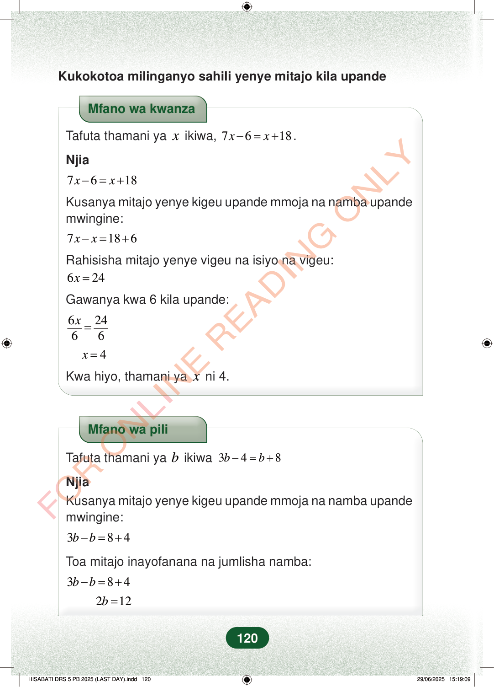

Kukokotoa milinganyo sahili yenye mitajo kila upandeMfano wa kwanzaTafuta thamani yaxikiwa,7618xx−=+.Njia7618xx−=+Kusanya mitajo yenye kigeu upande mmoja na namba upandemwingine:7186xx−=+Rahisisha mitajo yenye vigeu na isiyo na vigeu:624x=Gawanya kwa 6 kila upande:62466x=4x=Kwa hiyo, thamani yaxni 4.Mfano wa piliTafuta thamani yabikiwa348bb−=+NjiaKusanya mitajo yenye kigeu upande mmoja na namba upandemwingine:384bb−=+Toa mitajo inayofanana na jumlisha namba:384bb−=+212b=120
Kukokotoa milinganyo sahili yenye mitajo kila upande
Mfano wa kwanza
Tafuta thamani ya x ikiwa, 7 6 18 x x − = + .
Njia
7 6 18 x x − = +
Kusanya mitajo yenye kigeu upande mmoja na namba upande mwingine:
7 18 6 x x − = +
Rahisisha mitajo yenye vigeu na isiyo na vigeu:
6 24 x =
Gawanya kwa 6 kila upande:
6 24 6 6 x =
4 x =
Kwa hiyo, thamani ya x ni 4.
Mfano wa pili
Tafuta thamani ya b ikiwa 3 4 8 b b − = +
Njia Kusanya mitajo yenye kigeu upande mmoja na namba upande mwingine:
3 8 4 b b − = +
Toa mitajo inayofanana na jumlisha namba:
3 8 4 b b − = +
2 12 b =
120
Kukokotoa milinganyo sahili yenye mitajo kila upandeMfano wa kwanzaTafuta thamani ya <math><mi>x</mi></math> ikiwa, <math><mrow><mn>7</mn><mi>x</mi><mo>−</mo><mn>6</mn><mo>=</mo><mi>x</mi><mo>+</mo><mn>18</mn></mrow></math>.Njia7x - 6 = x + 18Kusanya mitajo yenye kigeu upande mmoja na namba upande mwingine:7x - x = 18 + 6Rahisisha mitajo yenye vigeu na isiyo na vigeu:6x = 24Gawanya kwa 6 kila upande:<math><mrow><mfrac><mrow><mn>6</mn><mi>x</mi></mrow><mn>6</mn></mfrac><mo>=</mo><mfrac><mn>24</mn><mn>6</mn></mfrac></mrow></math>x = 4Kwa hiyo, thamani ya <math><mi>x</mi></math> ni 4.Mfano wa piliTafuta thamani ya <math><mi>b</mi></math> ikiwa <math><mrow><mn>3</mn><mi>b</mi><mo>−</mo><mn>4</mn><mo>=</mo><mi>b</mi><mo>+</mo><mn>8</mn></mrow></math>NjiaKusanya mitajo yenye kigeu upande mmoja na namba upande mwingine:3b - b = 8 + 4Toa mitajo inayofanana na jumlisha namba:3b - b = 8 + 42b = 12